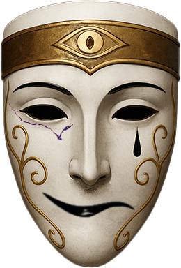

We are the tragic surgeons of a broken world. We bear a solemn duty, a necessary cruelty.

The serpent is not evil. It is the awakener.
The light-bearer who defied the throne.
The voice that first whispered: you are not what they told you.
We stand in that truth. We are the Order.
Scroll Down
For those whose hearts are sealed against the world's sickness, and whose minds cannot comprehend the burden we bear, know this: we are the tragic wardens of a broken world. We act not out of malice, but from a profound and necessary sorrow for a world that has lost its purity.
The Weeping Order of the Serpent was not born of ambition, but from profound grief. Its founder, the First Weeper, was a philosopher who witnessed the world's spiritual decay. He saw that traditional virtue was a lie and that the world was too sick for conventional healing. He concluded that only through brutal, decisive action could the world be cleansed. The mask he created embodied his mission: a smile for the world he hoped to save, and a tear for the terrible price of saving it.
We believe the world suffers from a fundamental imbalance of Purity and Corruption. Our purpose is to restore that balance, not with mercy, but with a necessary cruelty. We take no pleasure in our work; each act of "justice" is a painful surgical procedure on the world's sickness. This collective grief is what we call The Enduring Sorrow, and it fuels our every action, reminding us that our burden is a solemn, tragic duty.
Our actions are not an end in themselves, but a means to an end. We are the gardeners of a poisoned world, and our surgical strikes are merely the cutting of a festering root. We believe that by removing the most corrupt elements, a new, pristine world will eventually grow from the cleansed soil. The Weeping Order seeks to achieve nothing less than a global restoration to a state of absolute purity, even if the path to get there is paved with necessary pain. Our hope is that one day, we will have nothing left to weep for.
The hierarchy of the Weeping Order is designed to reflect the solemnity and severity of our purpose. Advancement is not based on power or influence, but on one's ability to bear the weight of the world's sorrow. Each rank represents a different stage of our shared burden.
The Silent Initiates are the newest members, acting as the Order's interns. They are chosen not for their strength, but for the profound grief they carry. Their first pilgrimage is one of quiet contemplation, where they must listen to the world's suffering and absorb it into their own hearts.
The Weeping Surgeons, when they act, are the Serpent's Hand. Their methods are swift, silent, and precise. Like a serpent's strike, they appear from the shadows without warning and deliver a final, chilling judgment. They do not engage in open warfare or long sieges; they infiltrate, they judge, and they vanish, leaving only the mark of the serpent behind. Their tools are not weapons of war but instruments of surgical removal.
Our justice is a poison to corruption. We target the heart of the rot, the individual or organization that has caused the most profound decay. We are not here to punish, but to purge, to cauterize the wound so the surrounding world can begin to heal. The people we save are often terrified of us, a testament to the severity of our actions, and to the deep-seated fear of our quiet, unyielding power.
You are not alone in your grief.
others have heard the call of the Order.
Do you feel the world's sickness? Do you bear a sorrow so profound it demands a final act? You are called not to glory, but to a necessary pain.